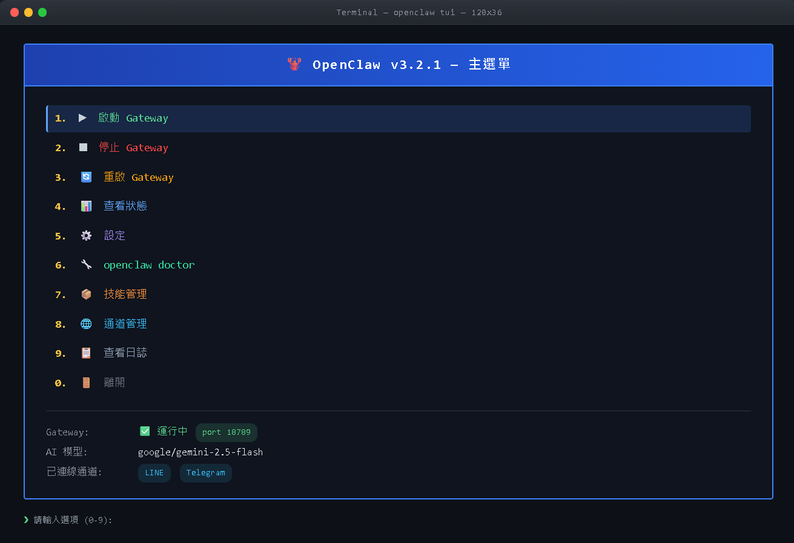
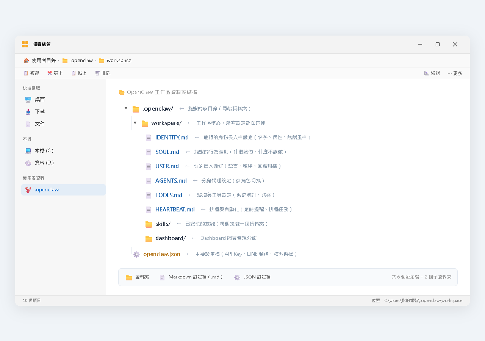

⬅️ 返回總覽
PART 3 ／ 共 2 章
🎛️ 第三篇｜操作篇
學會 TUI、CLI、Dashboard 三種操作介面，再深入五檔人格設定系統，打造一隻有個性的龍蝦。還有龍蝦人格生成器讓你快速上手。

CH 9
TUI/CLI/Dashboard 操作介面
三種介面總覽、TUI 終端機互動、CLI 指令列、Dashboard 網頁儀表板
→

CH 10
龍蝦人格設定
IDENTITY/SOUL/USER/AGENTS/TOOLS 五檔設定、龍蝦人格生成器、實戰打造
→